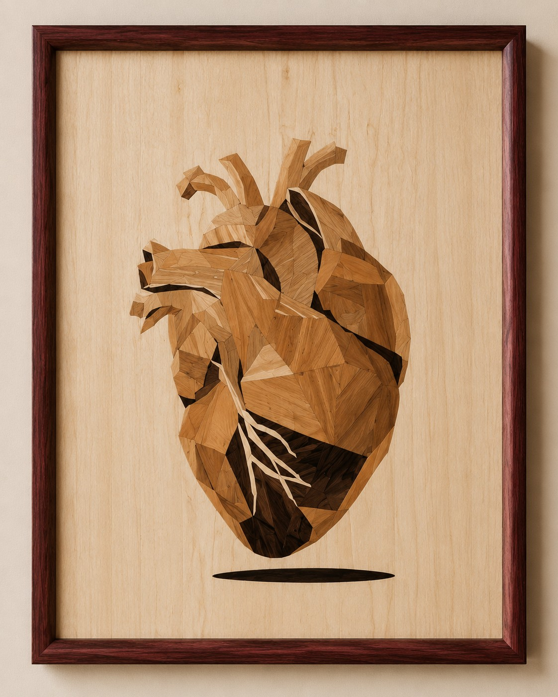

Anatomical Heart
Un corazón anatómico geométrico construido con chapas de madera cortadas con precisión. La pieza explora la tensión entre la forma orgánica y la fragmentación matemática, donde la madera natural se convierte en un lenguaje estructural para la anatomía humana. Concebida como parte de la serie VaCa Marquetry Collection, no está destinada a la venta, sino a la expresión de la marca, la presentación en galería y el relato arquitectónico.
- Categoría Colección
- Técnica Marquetería en chapa de madera natural sobre panel de abedul
- Número de piezas 95 piezas de chapa cortadas a mano
- Dimensiones 32 × 42 cm
- Peso Aprox. 3 kg
- Año 2026
- Acabado Barniz acrílico mate de protección
- Enmarcado Enmarcada: lista para colgar
- Edición Original único
No está a la venta
Esta obra forma parte de la serie VaCa Marquetry Collection y no está a la venta.
Ver la Colección privada →La anatomía como estructura
Un corazón anatómico geométrico, construido íntegramente con chapa de madera cortada con precisión. La pieza se sitúa en la intersección entre un tema orgánico y la fragmentación matemática: el material natural usado como lenguaje estructural de la forma humana, más que como un parecido literal.
95 piezas, un panel
Noventa y cinco piezas de chapa cortadas una a una convergen en un único panel de 32 × 42 cm, acabado con el mismo barniz acrílico mate de protección que se utiliza en toda la colección.
«Parte de la serie VaCa Marquetry Collection: creada para la expresión de la marca, la presentación en galería y el relato arquitectónico, no para la venta.»
Estado en la colección
Anatomical Heart es una pieza de la VaCa Marquetry Collection, conservada para la expresión de la marca y para exposiciones, no para su adquisición. No lleva certificado de autenticidad y no está disponible para envío ni venta.
Exposición y presentación
Presentada como parte de la colección del taller y de su relato arquitectónico: una pieza clave en la evolución del lenguaje de diseño de VaCa Marquetry.
Encargue un retrato
hecho enteramente para usted
Envíe una fotografía y reciba una vista previa privada de su retrato, preparada en 24 horas.
Empezar un retrato a medida